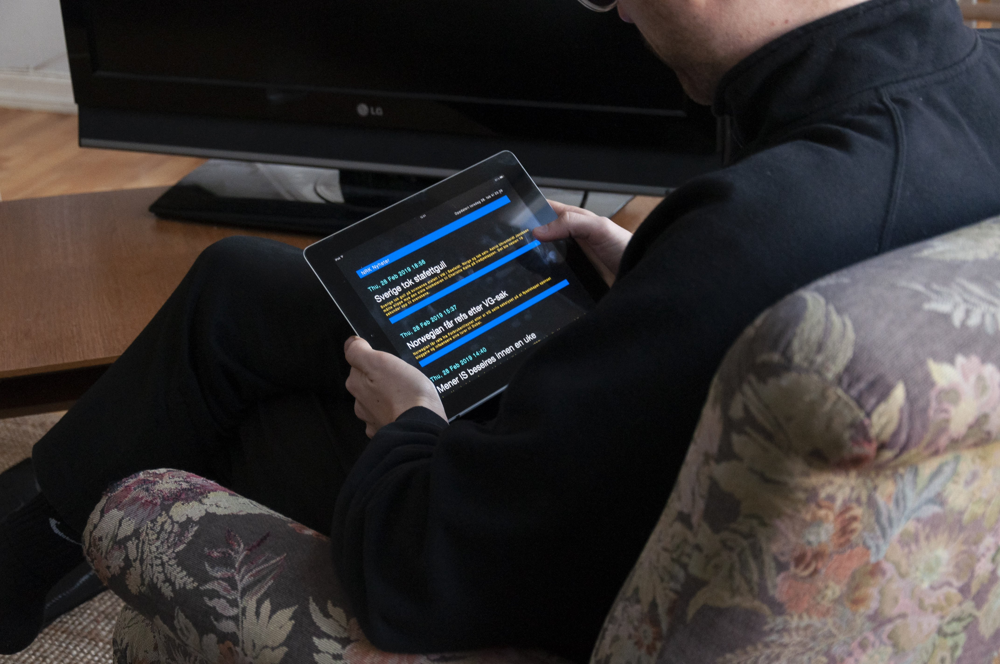

NRK TXT is a product tailored for my grandfather. It is based on the ancient phenomenon of «Text TV» where the user would be able to read news, football results and weather on screen. I worked with the NRK News API, which does not contain a whole lot of different data. I used the date, title and description from the XML, and built the experience around that. Ideally, the articles would appear on screen (added to the list from the top) so that the user could browse earlier posts.
